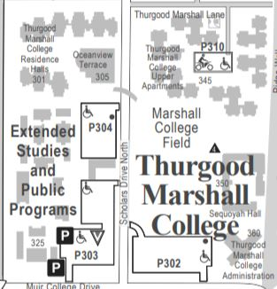
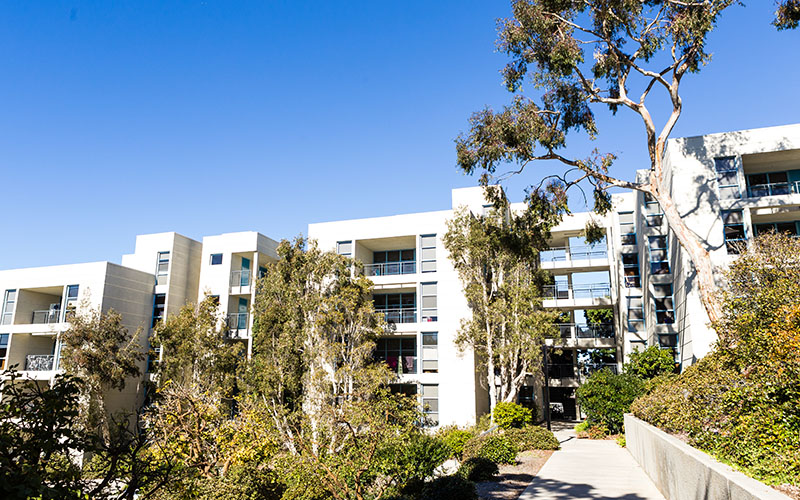

Marshall
The Student and Scholar and Citizen
The educational philosophy of Marshall College is guided by the belief that regardless of a
student’s major, a broad liberal arts education must include an awareness and understanding of one’s role
in society. Therefore, the distinctive core sequence, which serves as the centerpiece of the general-education
requirements, emphasizes a critical examination of the human condition in our dynamic American society.
Enrollment(2020): 5,107 - 16.0% of total enrollment


There are a total of 6 general education requirements for Marshall College: Dimensions of Culture,
Natural Sciene, Mathematics, Statistics and Logic, Humanities and Cultural Studies, Fne Arts, and
Disciplinary Breadth.
Dimensions of Culture
Students are required to complete a three-quarter core sequence entitled Dimensions of Culture:
Diversity, Justice, and Imagination. Courses in this sequence are only offered in certain quarters.
Natural Science
- DOC 1: Diversity (4 units) Fall Quarter only
- DOC 2: Justice (6 units) Winter Quarter only
- DOC 3: Imagination (6 units) Spring Quarter only
Students are required to complete a total of three (3) Natural Science courses:
one in Biology, one in Chemistry, and one in Physics.
Biology Courses
Mathematics, Statistics and Logic
Biology Courses
- ANTH 2
- COGS 17
- BILD 1, 2, 3, 7, 10, 12, 20, 22, 26, 30, 36, 38
- CHEM 4, 6A, 6B, 6C, 6AH, 6BH, 6CH, 11, 12, 13
- PHYS 1A & 1AL, 1B & 1BL, 1C & 1CL, 2A, 2B, 2C, 4A, 4B, 4C, 5, 7, 8, 9, 10, 11, 12, 13
- SIO 1, 10, 12, 15, 16, 20, 30, 35, 40, 45, 50
Students are required to complete two (2) courses for Mathematics, Statistics and Logic.
Students have three options to complete this requirement from the approved list of courses:
Option A: Complete two courses in the Mathematics/Advanced Statistics category.
Option B: Complete one course in the Mathematics/Advanced Statistics category and one course in either the Introductory Statistics category or the Computer Programming & Logic category. Option C: Complete one course in the Introductory Statistics category and one course in the Computer Programming & Logic category. Mathematics, Advanced Satistics Courses
Humanities and Cultural Studies
Option B: Complete one course in the Mathematics/Advanced Statistics category and one course in either the Introductory Statistics category or the Computer Programming & Logic category. Option C: Complete one course in the Introductory Statistics category and one course in the Computer Programming & Logic category. Mathematics, Advanced Satistics Courses
- Biology (BIEB) 100
- MATH 3C
- MATH 4C
- MATH 10A, 10B, or 10C
- MATH 20A, 20B, or 20C
- MATH 180A or 181A
- Cognitive Science (COGS) 14A
- Human Developmental Sciences (HDS) 60
- Political Science (POLI) 30
- Psychology (PSYC) 60
- Sociology (SOCI) 60
- CSE 8A or 11
- CSS 1
- Linguistics (LIGN) 17
- MAE 5, 9 or 10
- Philosophy (PHIL) 10 or 12
Students are required to complete two Humanities and Cultural Studies
courses from the approved list of courses in domestic and global cultures.
Fine Arts Requirement
- African American Studies (AAS) 10
- Ethnic Studies (ETHN) 1, 2, 3 or 20
- History (HILD) 7A, 7B, 7C, 10, 11, 12 or 14
- Latin American Studies (LATI) 10, 50
- Literatures in English (LTEN) 27, 28 or 29
- Literatures in Cultural Studies (LTCS) 50, 52
- Study of Religion (RELI) 2
- Global South Studies (GSS) 20, 21, 22, 23, 24, 25, or 26 (formerly Third World Studies [TWS])
Students are required to complete one Fine Arts course among the list of approved
courses in Music, Theatre & Dance, or Visual Arts.
Disciplinary Breadth
- Music (MUS) 4 - 19, 20, 80 (MUS 80 must be taken for 4 units to count towards GE)
- Theatre/General (TDGE) 1, 5, 10-12
- Theatre/History (TDHT) 21, 22, 23
- Visual Arts (VIS) 1-3, 20-22 or 84
Students are required to complete four 4-unit Disciplinary Breadth courses -
two (2) of which must be upper-division - outside the major field of study. At least one of the
upper-division courses must include
significant writing.
Please
click here
to determine which departments you may shoose from to satisfy this requirement.